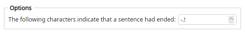

Does not change names by itself. It sets which characters count as sentence ends for later Letters Case (Sentence case) and Casing List (uppercase sentence initials).
Until this filter runs, Magic File Renamer uses . ! ? as the default set.
hello: next; again. no >>> Hello: Next; Again. no
Example assumes Sentence End Characters is set to :; then Letters Case → Sentence case.